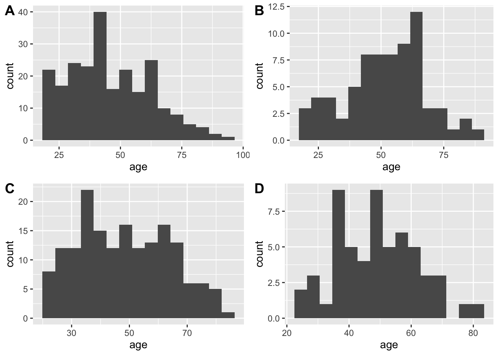
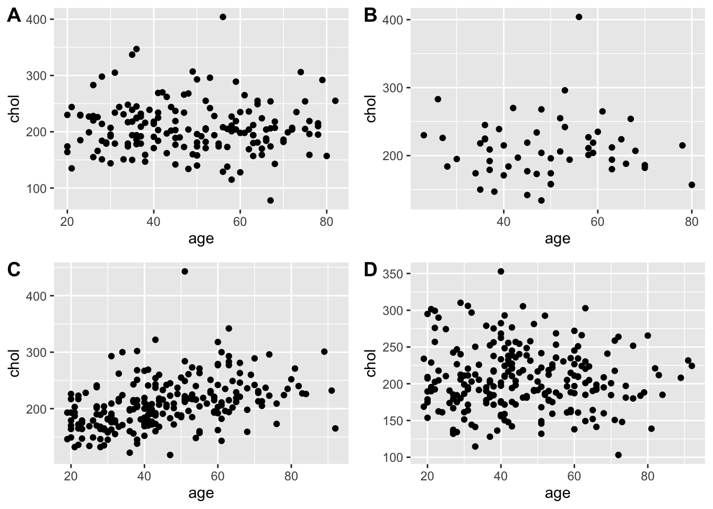
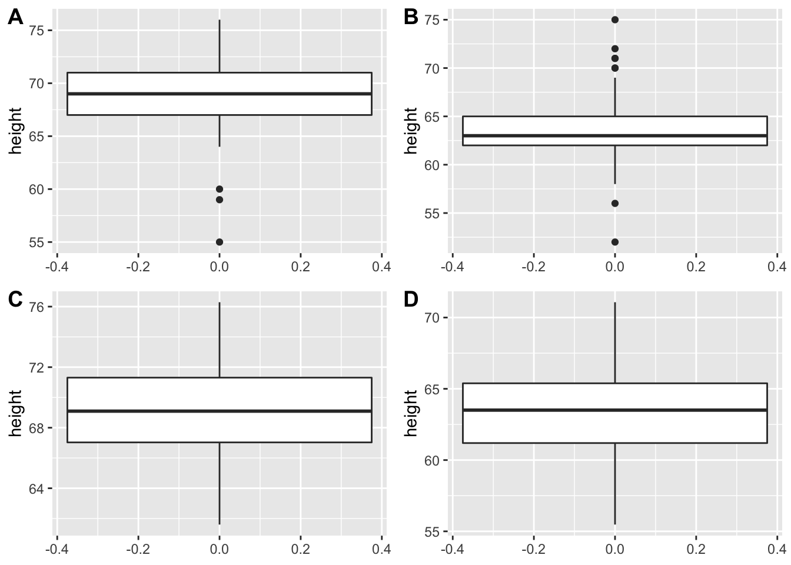

R-quiz
Introduction to quiz
This quiz is designed to help to test basic R skills that we rely on during the course “Introduction to Biostatistics and Machine Learning”. In case you do not have much R experience or you are unsure about your level, we encourage you to take the quiz. Basically, to comfortably follow the course, you should be able to get all the questions right without much effort, i.e. without needing to google for answers or possible solutions.
The quiz is anonymous and not linked to the course application in any way. We trust that you apply to the course only if you are meeting the course criteria, including R skills, and do not claim a spot otherwise.
Instructions
- Use R to perform all the calculations, even if some can be done by hand or using a calculator on your mobile.
- Each question is worth one point and is meant to test a different R skills, e.g. reading in .csv files or vector operations.
- You will be able to see the results immediately after finishing and submitting the quiz. Note your score and time.
- Getting all the questions right under 30 minutes means you will be able to follow the course without having to worry about R syntax. We welcome your course application!
- Note the questions you may struggle with and practice these topics (indicated by the “Testing: …” label at the top of the question). There are many online tools and books available for learning R, e.g. R for Data Science by Hadley Wickham & Garrett Grolemund
- After some additional practicing you are welcome to retake the quiz. There are at least three alternatives to each question, drawn at random when you start a new quiz, so you can test your progress. You can retake the quiz as many times you like.
Questions: using help()
Testing: using documentation pages
Q
Use help() or ?() to find out more about install.packages() function. Which of the below is NOT an argument of the install.packages()
- pkgs
- dependencies
- dir (correct)
- method
Q
Use help() or ?() to find out more about read.csv() function. Which of the below is NOT an argument of the read.csv()?
- file
- sep
- fill
- footer (correct)
Q
Use help() or ?() to find out more about sample() function. Which of the below is NOT an argument of the sample()?
- x, the elements to choose from
- size, a non-negative integer giving the number of items to choose
- replace, logical data type, TRUE for sampling with replacement
- useHash, logical data type, TRUE for using hash-version of the algorithm (correct)
Questions: using R as calculator
Testing: using R as calculator
Q
Use R as calculator to compute (rounded to two decimal places):
\(\ln 2\)
log(2) %>%
round(2)[1] 0.69Q
Use R as calculator to compute (rounded to two decimal places):
\(e^2\)
exp(2) %>%
round(2)[1] 7.39Q
Use R as calculator to compute (rounded to two decimal places):
\(\sqrt{10}\)
sqrt(19) %>%
round(2)[1] 4.36Q
Use R as calculator to compute (rounded to two decimal places):
\(3.5^9\)
3.5^9 %>%
round(2)[1] 78815.64Questions: vectors I (numeric)
Testing: numeric vectors
Q
Given a vector x = [1, 2, 3, NA, 9, 10, 11, 13, 999, -10, NA] what is the sum of all its elements, excluding the missing values (NA)?
x <- c(1, 2, 3, NA, 9, 10, 11, 13, 999, -10, NA)
sum(x, na.rm = TRUE)[1] 1038Q
Given a vector x = [1, 2, 3, NA, 9, 10, 11, 13, 999, -10, NA] what is the average, rounded to two decimal places, of all its elements, excluding the missing values (NA)?
x <- c(1, 2, 3, NA, 9, 10, 11, 13, 999, -10, NA)
mean(x, na.rm = T) %>%
round(2)[1] 115.33Q
Given a vector x = [1.23, 9.99, -1.03, 2.33, NA, NA, 4.0, 0.57] what is the average, rounded to two decimal places, of all its elements, excluding the missing values (NA)?
x <- c(1.23, 9.99, -1.03, 2.33, NA, NA, 4.0, 0.57)
mean(x, na.rm = T) %>%
round(2)[1] 2.85Questions: vectors II (counts)
Testing: vectors basic operations
Q
Run the below two lines of code in R to create a vector x containing 100 random values of A, B and NA. The set.seed() function in R is used to create reproducible results when writing code that involves creating variables that take on random values. By using the set.seed() function, you guarantee that the same random values are produced each time you run the code
What is the ratio of As to Bs, i.e. number of As divided by number of Bs, rounded to two decimal places?
set.seed(123)
x <- sample(c("A", "B", NA), size = 100, replace = TRUE, prob = c(0.6, 0.3, 0.1))
A <- sum(x == "A", na.rm = T)
B <- sum(x == "B", na.rm = T)
print(round(A/B, 2))[1] 1.82Q
What is the ratio of Bs to As, i.e. number of Bs divided by number of As, rounded to two decimal places?
set.seed(123)
x <- sample(c("A", "B", NA), size = 100, replace = TRUE, prob = c(0.6, 0.3, .1))
A <- sum(x == "A", na.rm = T)
B <- sum(x == "B", na.rm = T)
print(round(B/A, 2))[1] 0.55Q
What is the ratio of missing values, NAs, to non-missing values, i.e. number of NAs divided by number of As and Bs, rounded to two decimal places?
set.seed(123)
x <- sample(c("A", "B", NA), size = 100, replace = TRUE, prob = c(0.6, 0.3, 0.1))
AB <- sum(x == "A" | x == "B", na.rm = T)
n.na <- sum(is.na(x) == TRUE)
print(round(n.na/AB, 2))[1] 0.08Questions: matrices
Testing: matrix basic operations
Q
Given a matrix \(X = \begin{bmatrix} 1 & 4 \\ 2 & 5 \\ 3 & 6 \end{bmatrix}\)
Calculate \((X^TX)^{-1}\), that is find transpose of a matrix that results from algebraically multiplying transpose of matrix X by matrix X.
Hint: start by creating X matrix in R. For taking the inverse, you can use solve() function
What is the value of the \(X_{1,1}\) element, rounded to two decimal places?
X <- matrix(data = 1:6, nrow = 3)
R <- round(solve(t(X)%*%(X)),2)
print(R[1,1])[1] 1.43Q
Given a matrix \(X = \begin{bmatrix} 1 & 4 \\ 2 & 5 \\ 3 & 6 \end{bmatrix}\)
Calculate \((X^TX)^{-1}\), that is find transpose of a matrix that results from multiplying (algebraically) transpose of matrix X by matrix X.
Hint: start by creating X matrix in R. For taking the inverse, you can use solve() function
What is the value of the \(X_{1,2}\) element, rounded to two decimal places?
X <- matrix(data = 1:6, nrow = 3)
R <- round(solve(t(X)%*%(X)),2)
print(R[1,2])[1] -0.59Q
Given a matrix \(X = \begin{bmatrix} 1 & 4 \\ 2 & 5 \\ 3 & 6 \end{bmatrix}\)
Calculate \((X^TX)^{-1}\), that is find transpose of a matrix that results from algebraically multiplying transpose of matrix X by matrix X.
Hint: start by creating X matrix in R. For taking the inverse, you can use solve() function
What is the value of the \(X_{2,2}\) element, rounded to two decimal places?
X <- matrix(data = 1:6, nrow = 3)
R <- round(solve(t(X)%*%(X)),2)
print(R[2,2])[1] 0.26Questions: import data
Testing: tidyverse(), importing data from .csv and data filtering
Q
Download diabetes data from here. The data comes from faraway package and it was collected as part of a study to understand the prevalence of obesity, diabetes, and other cardiovascular risk factors in central Virginia, USA. You can read more about the data https://search.r-project.org/CRAN/refmans/faraway/html/diabetes.html.
Use tidyverse, what is total cholesterol (chol) value for the subject with id = 15522?
data.diabetes <- read_csv("data/data-diabetes.csv")
data.diabetes %>%
filter(id == "15522") %>%
select("id", "chol", "waist") %>%
print()# A tibble: 1 × 3
id chol waist
<dbl> <dbl> <dbl>
1 15522 206 41Q
Download diabetes data from here. The data comes from faraway package and it was collected as part of a study to understand the prevalence of obesity, diabetes, and other cardiovascular risk factors in central Virginia, USA. You can read more about the data https://search.r-project.org/CRAN/refmans/faraway/html/diabetes.html.
Use tidyverse, what is total cholesterol (chol) value for the subject with id = 16004?
data.diabetes <- read_csv("data/data-diabetes.csv")
data.diabetes %>%
filter(id == "16004") %>%
select("id", "chol", "waist") %>%
print()# A tibble: 1 × 3
id chol waist
<dbl> <dbl> <dbl>
1 16004 268 38Q
Download diabetes data from here. The data comes from faraway package and it was collected as part of a study to understand the prevalence of obesity, diabetes, and other cardiovascular risk factors in central Virginia, USA. You can read more about the data https://search.r-project.org/CRAN/refmans/faraway/html/diabetes.html.
Use tidyverse, how old was the subject with id=16004 at the time of the study?
data.diabetes <- read_csv("data/data-diabetes.csv")
data.diabetes %>%
filter(id == "16004") %>%
select("id", "chol", "waist", "age") %>%
print()# A tibble: 1 × 4
id chol waist age
<dbl> <dbl> <dbl> <dbl>
1 16004 268 38 38Questions: data transformations
Testing: tidvyerse(), data transformation and summaries
Q
Start with the diabetes data. Use tidyverseand write code to:
- Keep only subjects (IDs) for which complete information is available, i.e. no missing data in any of the variables.
- Create a new variable called
group. The subject’s group value should be “diabetes” if the Glycosolated hemoglobin (glyhb) is greater than 7.0 and “healthy” otherwise.
What is the average total cholesterol (chol), rounded to two decimal places, for the “diabetic” subjects?
data.diabetes %>%
na.omit() %>%
mutate(group = ifelse(glyhb > 7, "diabetic", "healthy")) %>%
group_by(group) %>%
summarize(mean_chol = round(mean(chol),2)) %>%
data.frame() %>%
print() group mean_chol
1 diabetic 249.33
2 healthy 207.82Q
Start with the diabetes data. Use tidyverseand write code to:
- Keep only subjects (IDs) for which complete information is available, i.e. no missing data in any of the variables.
- Create a new variable called
group. The subject’s group value should be “diabetes” if the Glycosolated hemoglobin (glyhb) is greater than 7.0 and “healthy” otherwise.
What is the average total cholesterol (chol), rounded to two decimal places, for the “healthy” subjects?
data.diabetes %>%
na.omit() %>%
mutate(group = ifelse(glyhb > 7, "diabetic", "healthy")) %>%
group_by(group) %>%
summarize(mean_chol = round(mean(chol),2)) %>%
data.frame() %>%
print() group mean_chol
1 diabetic 249.33
2 healthy 207.82Q
Start with the diabetes data. Use tidyverseand write code to:
- Keep only subjects (IDs) for which complete information is available, i.e. no missing data in any of the variables.
- Create a new variable called
group_age. The subject’s group value should be “young-adult” if \(age \le 35\), “middle-aged” if \(35 > age \le 60\) and “older-adult” otherwise.
What is the average total cholesterol (chol), rounded to two decimal places, for the “young-adult” subjects?
data.diabetes %>%
na.omit() %>%
mutate(group_age = cut(age, c(0, 35, 60, Inf), c("young-adult", "middle-age", "older-adult"), include.lowest=TRUE)) %>%
group_by(group_age) %>%
summarize(mean_chol = round(mean(chol),2)) %>%
data.frame() %>%
print() group_age mean_chol
1 young-adult 194.52
2 middle-age 218.76
3 older-adult 227.50Q
Start with the diabetes data. Use tidyverseand write code to:
- Keep only subjects (IDs) for which complete information is available, i.e. no missing data in any of the variables.
- Create a new variable called
group_age. The subject’s group value should be “young-adult” if \(age \le 35\), “middle-aged” if \(35 > age \le 60\) and “older-adult” otherwise.
What is the average total cholesterol (chol), rounded to two decimal places, for the “older-adult” subjects?
data.diabetes %>%
na.omit() %>%
mutate(group_age = cut(age, c(0, 35, 60, Inf), c("young-adult", "middle-age", "older-adult"), include.lowest=TRUE)) %>%
group_by(group_age) %>%
summarize(mean_chol = round(mean(chol),2)) %>%
data.frame() %>%
print() group_age mean_chol
1 young-adult 194.52
2 middle-age 218.76
3 older-adult 227.50Questions: plotting
Q (histogram)
Testing: plotting with ggplot()
Start with the diabetes data. Write a code, using ggplot(), to make a histogram for age values, separate for female and males. Note, do not remove any missing values and use bins = 15 for geom_histogram(). Which statement is true?
- A shows histogram for “females” and C for “males” (correct)
- A shows histogram for “males” and C for “females”
- B shows histogram for “females” and D for “males”
- B shows histogram for “males” and D for “females”
nbins <- 15
p1 <- data.diabetes %>%
dplyr::filter(gender == "female") %>%
ggplot(aes(age)) +
geom_histogram(bins = nbins)
p2 <- data.diabetes %>%
na.omit() %>%
dplyr::filter(gender == "female") %>%
ggplot(aes(age)) +
geom_histogram(bins = nbins)
p3 <- data.diabetes %>%
dplyr::filter(gender == "male") %>%
ggplot(aes(age)) +
geom_histogram(bins = nbins)
p4 <- data.diabetes %>%
na.omit() %>%
dplyr::filter(gender == "male") %>%
ggplot(aes(age)) +
geom_histogram(bins = nbins)
library(ggpubr)
ggarrange(p1, p2, p3, p4, labels = c("A", "B", "C", "D"))
Q (scatter plot)
Start with the diabetes data. Write a code, using ggplot(), to make a scatter plot of age values (on x-axis) vs. chol values (on y-axis), separate for female and males. Note, do not remove any missing values.
Which statement is true?
data.diabetes %>%
group_by(gender) %>%
summarize(mean = mean(chol, na.rm = T), sd = sd(chol, na.rm = T))# A tibble: 2 × 3
gender mean sd
<chr> <dbl> <dbl>
1 female 208. 43.7
2 male 207. 45.5p1 <- data.diabetes %>%
dplyr::filter(gender == "male") %>%
ggplot(aes(x = age, y = chol)) +
geom_point()
p2 <- data.diabetes %>%
na.omit() %>%
dplyr::filter(gender == "male") %>%
ggplot(aes(x = age, y = chol)) +
geom_point()
p3 <- data.diabetes %>%
dplyr::filter(gender == "female") %>%
ggplot(aes(x = age, y = chol)) +
geom_point()
p4 <- data.diabetes %>%
#na.omit() %>%
dplyr::filter(gender == "female") %>%
mutate(chol2 = rnorm(234, mean = 207, sd = 45)) %>%
ggplot(aes(x = age, y = chol2)) +
geom_point() +
ylab("chol")
ggarrange(p1, p2, p3, p4, labels = c("A", "B", "C", "D"))Warning: Removed 1 rows containing missing values (geom_point).
- A shows scatter plot for “males” and C for “females” (correct)
- A shows scatter plot for “females” and C for “males”
- B shows scatter plot for “males” and D for “females”
- B shows scatter plot for “females” and D for “males”
Q boxplot
Start with the diabetes data. Write a code, using ggplot(), to make a box plot of height values separate for female and males. Note, do not remove any missing values.
Which statement is true?
data.diabetes %>%
group_by(gender) %>%
summarize(mean = mean(height, na.rm = T), sd = sd(height, na.rm = T)) %>%
print()# A tibble: 2 × 3
gender mean sd
<chr> <dbl> <dbl>
1 female 63.7 2.85
2 male 69.1 2.92p1 <- data.diabetes %>%
dplyr::filter(gender == "male") %>%
ggplot(aes(y = height)) +
geom_boxplot()
p2 <- data.diabetes %>%
mutate(height2 = rnorm(403, mean = 69, sd = 3)) %>%
dplyr::filter(gender == "male") %>%
ggplot(aes(y = height2)) +
geom_boxplot() +
ylab("height")
p3 <- data.diabetes %>%
dplyr::filter(gender == "female") %>%
ggplot(aes(y = height)) +
geom_boxplot()
p4 <- data.diabetes %>%
#na.omit() %>%
dplyr::filter(gender == "female") %>%
mutate(height2 = rnorm(234, mean = 63, sd = 3)) %>%
ggplot(aes(y = height2)) +
geom_boxplot() +
ylab("height")
ggarrange(p1, p3, p2, p4, labels = c("A", "B", "C", "D"))Warning: Removed 5 rows containing non-finite values (stat_boxplot).
- A shows box plot for “males” and B for “females” (correct)
- A shows box plot for “females” and B for “males”
- A shows box plot for “males” and D for “females”
- C shows box plot for “females” and D for “males”
Questions: iterations and if statements
Testing: for loop and if statements
Q
Use the code below to draw 100 values from the normal distribution with mean 0 and standard deviation 10 and store them in a vector x. Write a for loop that adds a value to the negative elements only. If the negative value is found at the first index, a value of 1 should be added. If it is found on the fourth place, a value of 4 should be added. If it is found on the fifth place, a value of 5 should be added etc.
What is the sum of all the elements of x after running the loop?
set.seed(123)
x <- rnorm(100, mean = 0, sd = 10)
x <- round(x, 1)
print(x) [1] -5.6 -2.3 15.6 0.7 1.3 17.2 4.6 -12.7 -6.9 -4.5 12.2 3.6
[13] 4.0 1.1 -5.6 17.9 5.0 -19.7 7.0 -4.7 -10.7 -2.2 -10.3 -7.3
[25] -6.3 -16.9 8.4 1.5 -11.4 12.5 4.3 -3.0 9.0 8.8 8.2 6.9
[37] 5.5 -0.6 -3.1 -3.8 -6.9 -2.1 -12.7 21.7 12.1 -11.2 -4.0 -4.7
[49] 7.8 -0.8 2.5 -0.3 -0.4 13.7 -2.3 15.2 -15.5 5.8 1.2 2.2
[61] 3.8 -5.0 -3.3 -10.2 -10.7 3.0 4.5 0.5 9.2 20.5 -4.9 -23.1
[73] 10.1 -7.1 -6.9 10.3 -2.8 -12.2 1.8 -1.4 0.1 3.9 -3.7 6.4
[85] -2.2 3.3 11.0 4.4 -3.3 11.5 9.9 5.5 2.4 -6.3 13.6 -6.0
[97] 21.9 15.3 -2.4 -10.3y <- x
for (i in 1:length(x)){
if (x[i] < 0){
y[i] <- y[i] + i
}
}
print(sum(y))[1] 2453.1Q
Use the code below to draw 100 values from the uniform distribution with min=0 and max=1 stores them in a vector x. Write a for loop that adds a value to the negative elements only. If the negative value is found at the first index, a value of 0.1 should be added. If it is found on the fourth place, a value of 0.4 should be added. If it is found on the fitht place, a value of 0.5 should be added etc.
What is the sum of all the elements of x after running the loop?
set.seed(123)
x <- runif(100, min = -1, max = 1)
x <- round(x, 1)
print(x) [1] -0.4 0.6 -0.2 0.8 0.9 -0.9 0.1 0.8 0.1 -0.1 0.9 -0.1 0.4 0.1 -0.8
[16] 0.8 -0.5 -0.9 -0.3 0.9 0.8 0.4 0.3 1.0 0.3 0.4 0.1 0.2 -0.4 -0.7
[31] 0.9 0.8 0.4 0.6 -1.0 0.0 0.5 -0.6 -0.4 -0.5 -0.7 -0.2 -0.2 -0.3 -0.7
[46] -0.7 -0.5 -0.1 -0.5 0.7 -0.9 -0.1 0.6 -0.8 0.1 -0.6 -0.7 0.5 0.8 -0.3
[61] 0.3 -0.8 -0.2 -0.5 0.6 -0.1 0.6 0.6 0.6 -0.1 0.5 0.3 0.4 -1.0 0.0
[76] -0.6 -0.2 0.2 -0.3 -0.8 -0.5 0.3 -0.2 0.6 -0.8 -0.1 1.0 0.8 0.8 -0.6
[91] -0.7 0.3 -0.3 0.3 -0.4 -0.6 0.6 -0.8 -0.1 0.0y <- x
for (i in 1:length(x)){
if (x[i] < 0){
y[i] <- y[i] + i/10
}
}
print(sum(y))[1] 275.3Q
Use the code below to draw 100 values from the uniform distribution with min=0 and max=1 stores them in a vector x.
Write a for loop that adds a value to the negative elements and subtracts a value from the positive elements.
If a negative value is found at the first index, a value of 0.1 should be added. If it is found on the third place, a value of 0.3 should be added. If it is found on the fifth place, a value of 0.5 should be added etc.
If a positive value is found at the first index, a value of 0.1 should be subtracted. If it is found on the fourth place, a value of 0.4 should be subtracted. If it is found on the fifth place, a value of 0.5 should be subtracted etc.
What is the sum of all the elements of x after running the loop?
set.seed(123)
x <- runif(100, min = -1, max = 1)
x <- round(x, 1)
print(x) [1] -0.4 0.6 -0.2 0.8 0.9 -0.9 0.1 0.8 0.1 -0.1 0.9 -0.1 0.4 0.1 -0.8
[16] 0.8 -0.5 -0.9 -0.3 0.9 0.8 0.4 0.3 1.0 0.3 0.4 0.1 0.2 -0.4 -0.7
[31] 0.9 0.8 0.4 0.6 -1.0 0.0 0.5 -0.6 -0.4 -0.5 -0.7 -0.2 -0.2 -0.3 -0.7
[46] -0.7 -0.5 -0.1 -0.5 0.7 -0.9 -0.1 0.6 -0.8 0.1 -0.6 -0.7 0.5 0.8 -0.3
[61] 0.3 -0.8 -0.2 -0.5 0.6 -0.1 0.6 0.6 0.6 -0.1 0.5 0.3 0.4 -1.0 0.0
[76] -0.6 -0.2 0.2 -0.3 -0.8 -0.5 0.3 -0.2 0.6 -0.8 -0.1 1.0 0.8 0.8 -0.6
[91] -0.7 0.3 -0.3 0.3 -0.4 -0.6 0.6 -0.8 -0.1 0.0y <- x
for (i in 1:length(x)){
if (x[i] < 0){
y[i] <- y[i] + i/10
}else if (x[i] > 0){
y[i] <- y[i] - i/10
}
}
print(sum(y))[1] 66.9